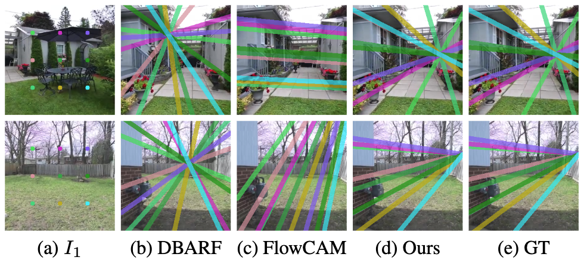
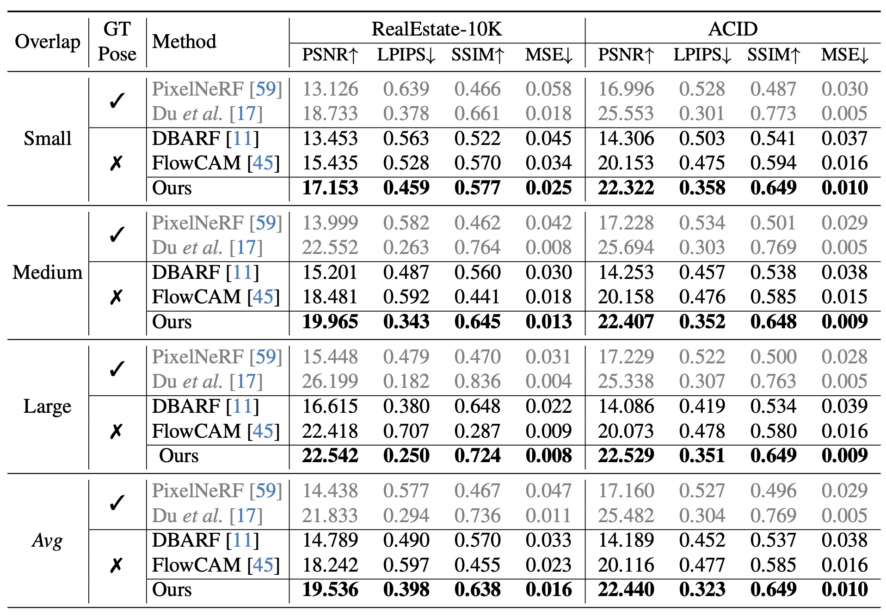
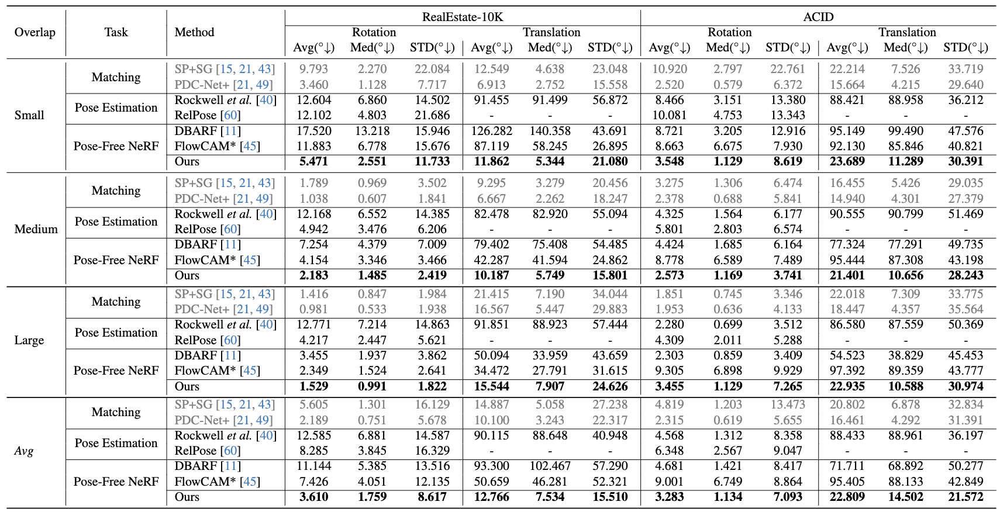

Qualitative Results
Qualitative comparisions on RealEstate10K Dataset.

Qualitative comparisons on ACID Dataset.

Visualization of epipolar lines from estimated poses.

Quantitative Results
The best-performing results are presented in bold, gray color indicates methods not directly
comparable; they are included for reference only.
We also specify the targeted task for each method.
We evaluate the performance of our method on camera pose estimation and novel view synthesis.


Main Architecture
For a pair of images, we extract multi-level feature maps and construct 4D correlation maps
at each level, encoding pixel pair similarities. These maps are refined for flow and pose
estimation, and the renderer then uses the estimated pose and refined feature maps for color
and depth computation.

Citation
Acknowledgements
The website template was borrowed from Michaël Gharbi.